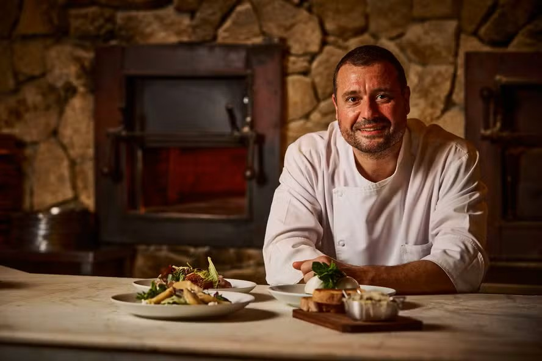

Tradição Italiana desde 1998

O Restaurante Mamamia nasceu em 1998, fundado pela família Rossi, que trouxe diretamente da Itália suas receitas tradicionais e o amor pela culinária.
Localizado inicialmente em um pequeno espaço, o restaurante conquistou rapidamente os clientes com seus pratos artesanais, massas frescas e um ambiente acolhedor.
Com o passar dos anos, o Mamamia cresceu, mas sem perder sua essência: oferecer comida de qualidade com aquele sabor caseiro que lembra as tradicionais cantinas italianas.
Hoje, o restaurante é referência na cidade, mantendo viva a tradição familiar e proporcionando momentos especiais para todos os seus clientes.